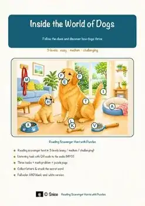
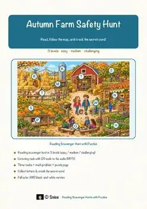
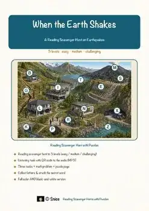
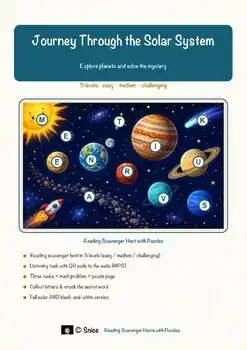
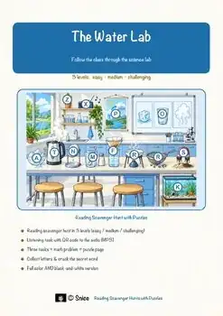
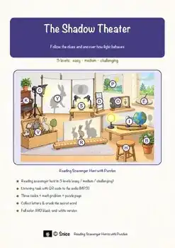
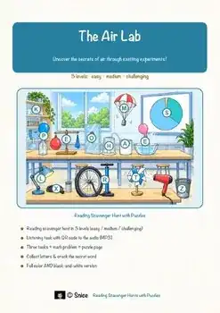
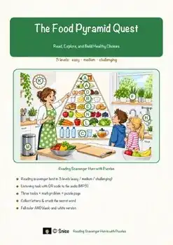
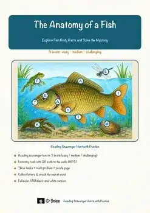
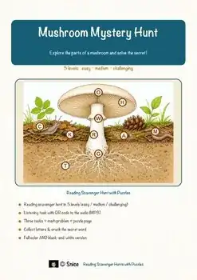

Science & Health
865 no-prep Science & Health resources with answer keys: reading comprehension, reading trails, and more – filter by grade.
865 resources
Grade

Salt on Ice Reading Comprehension Passages | Science Scavenger Hunt 7-8

Holiday Meal Reading Comprehension Passages | Life Skills Scavenger Hunt 7-8

Composting Reading Comprehension Passages | Science Scavenger Hunt 7-8

Compass Reading Comprehension Passages | Physics Scavenger Hunt 7-8

Pressure Cooker Reading Comprehension Passages | Physics Scavenger Hunt 7-8

Glaciers Reading Comprehension Passages | Earth Sciences Scavenger Hunt 7-8

Dolphin Sound Reading Comprehension Passages | Science Scavenger Hunt 7-8

Beaver Adaptations Reading Comprehension Passages | Science Scavenger Hunt 7-8

Pocket Lighter Reading Comprehension Passages | Science Scavenger Hunt 7-8

Dog Reading Comprehension Passages | Biology Scavenger Hunt 5-6

North Pole Reading Comprehension Passages | Science Scavenger Hunt 3-4

River Meanders Reading Comprehension Passages | Earth Science Scavenger Hunt 7-8

Oil Refinery Reading Comprehension Passages | Chemistry Scavenger Hunt 8-9

Journey Through the Sun Reading Comprehension | Science Scavenger Hunt 8-9

Ocean Floor Reading Comprehension Passages | Earth Science Scavenger Hunt 7-8

Chemical Change Reading Comprehension Passages | Science Scavenger Hunt 7-8

Fall Farm Safety Reading Comprehension Passages | Health Scavenger Hunt 1-2

Bone Structure Reading Comprehension Passages | Science Scavenger Hunt 7-8

Desert Reading Comprehension Passages | Science Scavenger Hunt 3-4

Earthquakes Reading Comprehension Passages | Earth Science Scavenger Hunt 5-6

Solar System Reading Comprehension Passages | Reading Scavenger Hunt 5-6

Hedgehog Reading Comprehension Passages | Science Scavenger Hunt 5-6

Water Reading Comprehension Passages | Science Scavenger Hunt 5-6

Light & Shadow Reading Comprehension Passages | Physics Scavenger Hunt 5-6

Air Reading Comprehension Passages | Science Scavenger Hunt 5-6

Video Game Coding Reading Comprehension Passages | Tech Scavenger Hunt 7-8

Spiders on the Wind Reading Passages | Science Scavenger Hunt 3-4

Body in Cold Reading Comprehension Passages | Health Scavenger Hunt 3-4

Winter Wildlife Reading Comprehension Passages | Science Scavenger Hunt 3-4

Night Hike Reading Comprehension Passages | Science Scavenger Hunt 3-4

Observatory Reading Comprehension Passages | Science Scavenger Hunt 3-4

Breath Reading Comprehension Passages | Science Scavenger Hunt 3-4

Snowmaking Science Reading Comprehension Passages | Science Scavenger Hunt 3-4

Husky Reading Comprehension Passages | Science Scavenger Hunt 3-4

Ice Rink Reading Comprehension Passages | Science Scavenger Hunt 3-4

Winter Sound Reading Comprehension Passages | Science Scavenger Hunt 3-4

Winter Road Crew Reading Comprehension Passages | Science Scavenger Hunt 3-4

Pumpkin Farm Reading Comprehension Passages | Science Scavenger Hunt 3-4

Icebreakers Reading Comprehension Passages | Science Scavenger Hunt 3-4

Seed Dispersal Reading Comprehension Passages | Science Scavenger Hunt 3-4

Sawmill Reading Comprehension Passages | Science Scavenger Hunt 3-4

Igloo Reading Comprehension Passages | Science Scavenger Hunt 3-4

Kites & Wind Reading Comprehension Passages | Science Scavenger Hunt 3-4

Food Pyramid Reading Comprehension Passages | Health Scavenger Hunt 5-6

Hedges Reading Comprehension Passages | Science Scavenger Hunt 7-8

Fish Anatomy Reading Comprehension Passages | Science Scavenger Hunt 5-6

Mushroom Reading Comprehension Passages | Science Scavenger Hunt 5-6

Potato Harvest Reading Comprehension Passages | Science Scavenger Hunt 3-4
No resources found – try a different search term or filter.